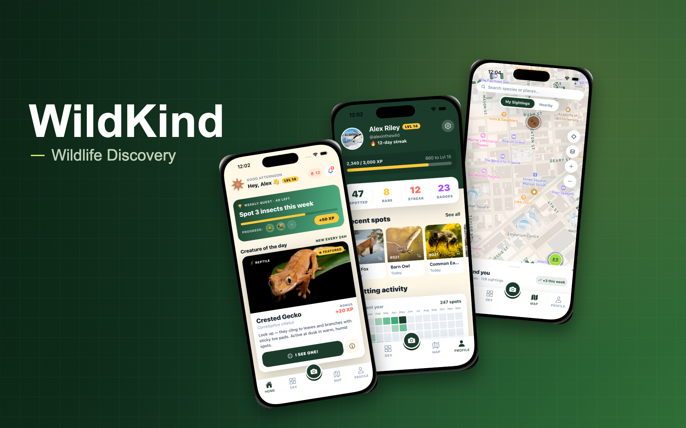

Personal Product · AI · Mobile
WildKind
AI-powered wildlife discovery platform helping people identify, collect, and learn about animals, plants, and nature through camera-based exploration.
Overview
WildKind started as a personal product experiment: what if nature apps felt less like a database and more like a playful field guide, collection system, and learning companion?
I designed and built the product from zero to one using AI-assisted workflows, moving from concept to working mobile prototype across identification, maps, collection, onboarding, and account systems.
The idea
Most nature identification apps are useful, but they often feel technical, adult-focused, or disconnected after the first scan.
WildKind explores a more playful direction: a camera-first discovery app where people can identify species, save sightings, build a personal WildDex, and learn through lightweight interactions.
The goal is to make nature discovery feel more like collecting, exploring, and learning, not just searching a database.
Product goals
Make discovery feel instant
Users should be able to open the camera, scan something, and quickly understand what they found.
Turn one-time scans into a collection loop
Instead of identifying something and leaving, users can save sightings, build a WildDex, and return to their discoveries.
Support real-world exploration
Map views, location-based sightings, and outdoor-first flows help the product feel connected to where users are.
Create a kid-friendly learning layer
The experience should feel playful and approachable without becoming childish or visually cheap.
What I designed
The biggest design challenge was making WildKind feel credible as a nature product while still feeling playful, collectible, and approachable.
Key product flows
Scan and identify
Users open the camera, capture a photo, and receive a match card with the species result.
Add to collection
A confirmed sighting can be saved to the user's WildDex, turning the scan into a collectible moment.
Explore on map
Sightings can appear in a map-based view, helping users connect discoveries to real places.
View species detail
Each species has a detail screen with images, basic facts, and saved user sightings.
Parent approval
For younger users, the app includes an approval flow where a parent or guardian can approve access before the child continues.
AI-assisted product build
WildKind was built using an AI-assisted workflow across design, product logic, front-end implementation, and debugging.
I used Claude and Cursor to help move faster from product decisions into working code, while still owning the product direction, UX decisions, visual system, and interaction quality.
The build includes React Native and Expo for the mobile app, Supabase for data and authentication, Mapbox for location-based exploration, and AI vision APIs for identification support.
This project helped me work more like a product designer who can prototype beyond static screens and think through the real behavior of a working product.
Design decisions
Camera-first experience
The app starts with discovery because the strongest user moment is seeing something in the real world and wanting to know what it is.
Collection as motivation
The WildDex gives users a reason to return, save progress, and feel ownership over what they find.
Soft, nature-inspired UI
The visual system uses greens, rounded cards, and soft depth to make the product feel calm, friendly, and outdoorsy.
Playful, not childish
The product is designed to work for families and curious adults, so the tone avoids feeling too young or game-heavy.
Real app structure
The product includes account systems, saved data, camera states, map views, and approval logic, not just concept screens.
Current status
WildKind is currently in MVP development.
The mobile app includes working flows for onboarding, authentication, camera capture, species identification, saved sightings, WildDex views, map exploration, profile states, and parent approval logic.
The landing page and waitlist are also live as part of the product launch preparation.
What this project shows
WildKind shows how I approach early-stage product work: starting with a loose idea, shaping it into a clear product loop, designing the experience, and building enough of the system to understand how it actually behaves.
It also reflects the way I'm currently using AI tools in my design workflow: not just to generate ideas, but to prototype, test flows, debug, and bring product concepts closer to reality.
A live product build, still evolving
WildKind is still in progress, but the core product direction, flows, and MVP experience are already taking shape. I'm continuing to refine the camera flow, identification quality, WildDex system, and learning experience.